Sesión 4: Componentes (1)
El árboles de componentes
Componentes
Un componente es un objeto de la Interfaz de Usuario, como una etiqueta (label), un botón (button) o un árbol (tree). Define una preseintación visual y una conducta en una interfaz de usuario. Al manipularlos, los desarrolladores pueden controlar la apariencia visual de la aplicación en el cliente. Un componente debe implementar la interfaz org.zkoss.zk.ui.Component.
Además de ser un objeto Java en el servidor, un componente tiene una correspondencia en el navegador, pero sólo si pertenece a una página. Cuando un componente se conecta a una página, se crea su parte visual. Cuando un componente se elimina de una página, se borra su parte visual. En el cliente, el navegador, la representación visual se implementa en forma de un DOM. Este DOM es actualizado automáticamente cuando modificamos la estructura del árbol de componentes en el servidor.
En Java hay dos formas de insertar un componente en una página. En primer lugar, se puede llamar al método setPage para hacer que el componente se convierte en el componente raíz de la página especificada. En segundo lugar, se puede llamar a los métodos setParent, insertBefore o appendChild para hacer que el componente sea hijo de otro. De esta forma, el componente hijo pasa a formar parte de la misma página que su padre.
De forma similar, es posible desconectar un componente raíz de una página llamando a setPage con null. Un hijo es desconectado si es desconectado de su padre o si su padre es esconectado de la página.
Cada componente tiene un identificador único que se inicializa automaticamente cuando se crea el componente. Los desarrolladores lo pueden cambiar en cualquier momento. El identificador se utiliza principalmente para poder acceder al componente directamente en el código Java y en las expresiones EL embebidas en la página ZUML.
Un ejemplo:
<window title="Vota" border="normal"> ¿Te gusta ZK? <label id="label1"/> <separator/> <button label="Si" onClick="label1.value = self.label"/> <button label="No" onClick="label1.value = self.label"/> </window>
Vemos la facilidad con la que se puede acceder a los componentes en el código Java escrito en ZUML. Cuando se actualiza la variable label1 en los manejadores de los eventos de los botones se está accediendo al identificador con la etiqueta label1 y se está cambiando su valor (que estaba vacío) a la etiqueta del botón que se ha pulsado (la variable self).
ZK proporciona más de 150 componentes con los que trabajar. ¿Cómo elegir el más adecuado? Dedicaremos una sesión completa a ver ejemplos de todos los componentes. Se pueden repasar también en la siguiente documentación:
- Guía de referencia de ZK (web de ZK, PDF local), donde se detalla la lista completa de componentes y sus propiedades.
- Aplicación de demostración de los componentes de ZK, en su web.
- Javadoc de ZK. Los componentes son clases definidas en los siguientes paquetes:
- Paquete org.zkoss.zul: contiene el conjunto de componentes usados para los clientes HTML.
- Paquete org.zkoss.zkex.zul: contiene la librería de extensiones, componentes no HTML como Fisheye o Jasperreport.
- En el proyecto ZK Forge se encuentran los componentes FCKeditor y gmaps.
Cuando escribimos código Java los atributos en ZUML se convierten en métodos getters y setters. Por ejemplo:
<button label="ok">
se corresponde con un objeto de la clase Button y el método setLabel:
Button button = new Button();
button.setLabel("ok")
Página y Escritorio
Una página (org.zkoss.ui.Page) es una colección de componentes. Una página confina los componentes que pertenecen a ella, y por ello se mostrarán obligatoriamente en una cierta parte del navegador, en la que se muestra la página. Se crea automaticamente una página cuando el cargador de ZK (ZK Loader) interpreta una página ZUML.
Una página ZUML puede incluir otras páginas ZUML directa o indirectamente. Ya que esas página se crean para servir a la misma petición URL, se agrupan en un unidad llamada escritorio (desktop, org.zkboss.ui.Desktop). En otras palabras, un escritorio es una colección de páginas que sirven una petición URL de un usuario. Conforme la aplicación ZK interacciona con el usuario se pueden añadir más páginas al escritorio o se pueden eliminar las ya existentes. De forma similar, un componente puede ser añadido o eliminado de una página.
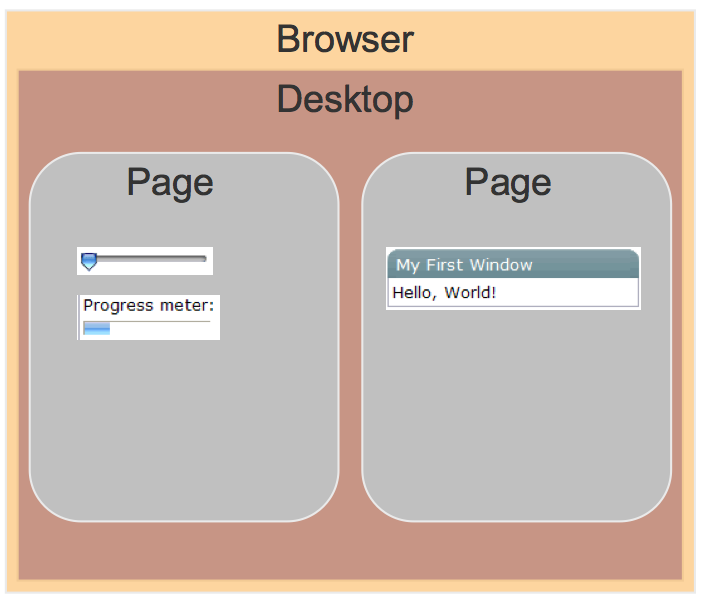
Tanto las páginas como los escritorios son creados y eliminados implícitamente. No hay ninguna función del API para eliminarlos o crearlos. Una página se crea cada vez que el cargador ZK carga una página ZUML y se elimina cuando ZK encuentra que ya no es referenciada. Un escritorio se crea cuando se carga la primera página ZUML.
Objetos implícitos
Además de los componentes creados por el desarrollador para configurar la IU, existen objetos implícitos creados automáticamente. Estos objetos permiten a los desarrolladores acceder a los componentes más eficientemente, obtener información acerca del sistema y del cliente. También pueden usarse para pasar variables.
La lista de objetos implícitos incluye los siguientes: self, spaceOwner, page, desktop, execution, session, application, componentScope, spaceScope, pageScope, desktopScope, sessionScope, applicationScope, requestScope, arg, each, forEachStatus, event.
Algunos de estos objetos son construcciones del lenguaje de script que se utilizan como variables para acceder a características de la IU, del árbol de componentes, o para hacer iteraciones.
Árboles de componentes UI
Los componentes de la IU se estructuran en forma de árbol. Tal y como sucede con los elementos de los árboles XML, un componente puede tener como máximo un padre y un número indeterminado de hijos. El cargador ZK construye un árbol DOM con la especificación XML de la IU y luego la transforma en un árbol de objetos Java componentes. Al final envía al cliente otro árbol DOM con los elementos HTML que debe mostrar.
Por ejemplo, en el siguiente código definimos un formulario compuesto de una ventana, dentro de la que se define una rejilla con cuatro filas.
<?page title="Listbox" contentType="text/html;charset=UTF-8"?>
<zk>
<window id="window" title="Formulario examen" width="450px">
<grid id="grid" fixedLayout="true" >
<rows id="rows">
<row id="r1">
<label value="Nombre de asignatura" />
<textbox id="nombreAsignatura" constraint="no empty" />
</row>
<row id="r2">
<label value="Fecha examen" />
<datebox id="fechaExamen" constraint="no empty"/>
</row>
<row id="r3">
<label value="Tipo de evaluación"/>
<listbox id="lbox">
<listitem label="Examen final"/>
<listitem label="Exámenes parciales"/>
<listitem label="Trabajo de investigación"/>
</listbox>
</row>
<row id="r4">
<button id="b1" label="Save" onClick="submit()" />
<button id="b2" label="Cancel" onClick="addCustomerWin.detach()" />
</row>
</rows>
</grid>
</window>
</zk>
La estructura de árbol sería la siguiente:
Es importante saber qué componentes pueden contener a qué otros componentes. Algunos componentes sólo pueden aceptar ciertos tipos de componentes como hijos. Algunos otros sólo pueden ser hijos de un cierto tipo de componentes. Otros no permiten ningún tipo de hijos.
Por ejemplo, Listbox sólo acepta como hijos Listcols y Listitem.
Un componente sin padre se denomina un componente raíz. Aunque ZK permite que una página tenga múltiples componentes raíz (una página no es un componente y no está en el árbol de componentes), la definición de XML impide que esto sea así en la descripción ZUML. El elemento <zk> permite eliminar esta limitación.
Es fundamental el concepto de los árboles de componentes, porque una de las formas de modificar la IU es añadiendo y eliminando componentes al vuelo, cuando se disparan eventos y se procesan en código Java o zscript.
Cuando un componente se crea en el código Java o zscript no se añade a ninguna página automáticamente, no aparece en el navegador. Para añadirlo, hay que incluirlo en el árbol de componentes, invocando alguno de los siguientes métodos. Todos pertenecen a la interfaz org.zkoss.zk.ui.Component
- void setParent(Component otroComponente): se añade un componente a un árbol de componentes, definiendo su padre.
- getParent: obtiene el padre de un componente.
- boolean appendChild(Component child): añade un hijo.
- boolean insertBefore(Component newChild, Componente refChild): inserta un nuevo componente newChild antes del componente que se usa como referencia.
- java.util.List getChildren(): devuelve una lista con los componentes hijos. Es posible añadir o eliminar hijos manipulando la lista directamente.
Un ejemplo de uso de setParent():
<zk>
<zscript>
public void nuevaEtiqueta() {
Label label = new Label();
label.setValue("Nueva etiqueta ");
label.setParent(win_2);
}
</zscript>
<hbox>
<window id="win_1" title="Ventana 1" border="normal">
<button label="añade" onClick="nuevaEtiqueta()" />
</window>
<window id="win_2" title="Ventana 2" border="normal">
</window>
</hbox>
</zk>
Para tener una idea completa del resto de funciones que proporciona ZK para trabajar con árboles de componentes se puede consultar la página de la interfaz org.zkoss.zk.ui.Component y buscar todas las apariciones de las palabras "parent" y "child".
Componentes
Interesante mirar las siguientes URLs:
- Componentes XUL
- ZK Componente Reference
- Guía del desarrollador de ZK
- Guía de referencia del desarrollador
- Java doc de ZK
Lista de componentes que vamos a estudiar:
Elementos simples
- Básicos: button, label
- Imágenes: image, imagemap
- Input: textbox, intbox, doublebox, datebox, timebox, spinner, slider
- Selección: checkbox, radio, combobox, bandbox
- Elementos XHTML
- Varios: progressmeter, timer
Contenedores y diálogos (http://docs.zkoss.org/wiki/Layout_and_Windows)
- Contenedores: window, panel, tabbox, tabs, tabpanels, tabpanel
- Diálogos: Messagebox, fileupload, Filedownload
Disposición de componentes (layout) (http://docs.zkoss.org/wiki/Layout_and_Windows)
- Disposición por defecto: space
- Modelo de caja: box, vbox, hbox, splitter
- Border layout: borderlayout, north, south, center, east, west
- Tablas de paneles: columnlayout, columnchildren, tablelayout, tablechildren
- Agrupaciones: groupbox, toolbar, toolbarbutton
Múltiples elementos. Contienen múltiples elementos y soportan live data y paginadores. (http://docs.zkoss.org/wiki/Grids%2C_Trees_and_Listbox)
- Listas: listbox, listhead, listheader, listitem, listcell
- Rejillas: grid, columns, column, rows, row, detail
- Árboles: tree, treechildren, treeitem, treerow, treecell, treecols, treecol, treefooter, treefoot
Menús:
Especializados:
Componentes simples
Comenzamos viendo los elementos más sencillos. Todos los componentes simples deben estar dentro de algún componente contenedor. Vamos a utilizar una ventana y un componente vbox que los distribuya de forma vertical.
Label
Una etiqueta (label) muestra un texto en pantalla.
Sus atributos más importantes son:
- value: el texto que queremos mostrar.
- pre: booleano que indica si se preservan los espacios en blanco y los fines de línea.
- maxlength: tamaño máximo en caracteres
- style: estilo CSS que se aplica al texto
Ejemplo:
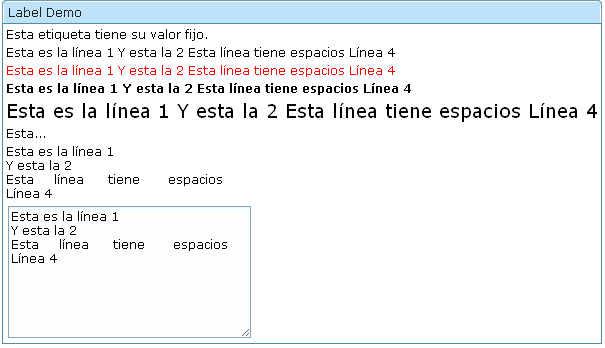
<window title="Label Demo" border="normal" width="600px">
<vbox>
<label pre="true" value="Esta etiqueta tiene su valor fijo."/>
<label id="lb1"/>
<label id="lb2" style="color:red"/>
<label id="lb3" style="font-weight:bold"/>
<label id="lb4" style="font-size:14pt"/>
<label id="lb5" maxlength="5"/>
<label id="lb6" pre="true"/>
<textbox id="txt" rows="2"><attribute name="onChange">
lb1.value=self.value;
lb2.value=self.value;
lb3.value=self.value;
lb4.value=self.value;
lb5.value=self.value;
lb6.value=self.value;
</attribute></textbox>
</vbox>
</window>
Button
El componente button muestra un botón que puede ser pinchado. El contenido del botón puede ser una imagen, una etiqueta o ambos.
Sus atributos más importantes son:
- label: texto del botón
- image: ruta de la imagen a colocar en el botón
- width: ancho del botón
- disabled: booleano indicando si está deshabilitado
- orient: posicionamiento de la imagen y el texto del botón (horizontal, vertical)
- dir: primero se muestra la imagen y después el texto (normal); si utilizamos reverse es al revés
Algunas páginas para buscar iconos:
Ejemplo:
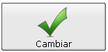
<button label ="Cambiar" image="images/ok.png" orient="vertical" width="150px"/>
Imagen para el ejemplo:

Imagen
El componente image hace que el navegador acceda a la URL que se le pasa y muestre la imagen. Igual que la etiqueta img de HTML. La ventaja es que es un componente ZK y puede ser modificado por otros componentes de la página.
Sus atributos y propiedades más importantes son:
- src: ruta de la imagen a mostrar
- content: imagen del elemento; se puede usar para modificar la imagen de forma programativa
Ejemplo:
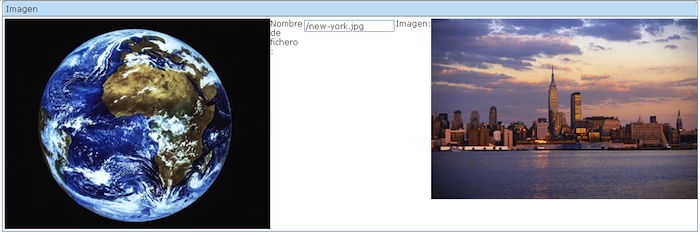
<window title="Imagen" border="normal">
<hbox>
<image src="images/earth.jpg"/>
<label value="Nombre de fichero : "/>
<textbox onChange="updateImage(self.value)"/>
<label value="Imagen:"/>
<image id="image"/>
<zscript><![CDATA[
void updateImage(String location) {
if (location.length() > 0) {
org.zkoss.image.AImage img = new org.zkoss.image.AImage(location);
image.setContent(img);
}
}
]]>
</zscript>
</hbox>
</window>
Las imágenes pueden generarse dinámicamente en el servidor utilizando librerías Java como java.awt.
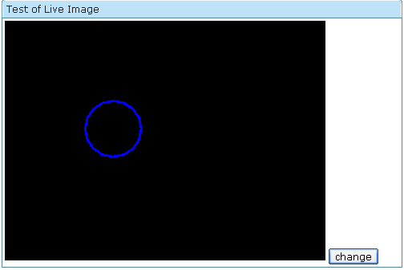
<window title="Test of Live Image" width="500px" border="normal">
<image id="img" />
<zscript>
import java.awt.*;
import java.awt.image.*;
import java.awt.geom.*;
void draw(int x1, int y1, int r1) {
BufferedImage bi = new BufferedImage(400, 300,
BufferedImage.TYPE_INT_RGB);
Graphics2D g2d = bi.createGraphics();
Ellipse2D circle = new Ellipse2D.Double(x1, y1, r1, r1);
g2d.setColor(Color.blue);
g2d.setStroke(new BasicStroke(3));
g2d.draw(circle);
img.setContent(bi);
}
int x = 100, y = 100, radius = 10;
draw(x, y, radius);
</zscript>
<button label="change" onClick="draw(x, y, radius += 10)" />
</window>
Imagemap
El componente imagemap muestra una imagen y permite que el usuario pueda seleccionar una coordenada.
Tiene los mismos atributos que image, pero además procesa el evento onClick y permite obtener las coordenadas en las que el usuario ha hecho click.
Ejemplo:
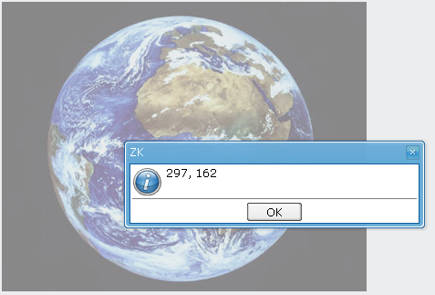
<imagemap src="images/earth.jpg" onClick='alert(event.x + ", " +event.y)'/>
Entrada
Los componentes textbox, intbox, decimalbox, doublebox, datebox, timebox muestran un campo en el que el usuario debe teclear sus datos.
El componente textbox se utiliza para obtener datos de texto. Sus atributos más importantes son:
- value: el valor introducido por el usuario o por defecto
- type: puede ponerse como password para que no aparezcan los caracteres tecleados
- rows: número de filas; 1 por defecto
- cols: número de columnas
- constraint: restricción que debe cumplir el valor introducido y mensaje de error en caso de que no la cumpla.
La restricción se define utilizando un lenguaje de expresiones regulares y consta de una expresión regular entre barras ("/") y (opcionalmente) un mensaje de error separados por dos puntos (":"):
/<expresión regular>/:<mensaje de error>
Por ejemplo, podemos formular la restricción para que el usuario rellene una dirección de correo electrónico de la siguiente forma:
constraint="/.+@.+\.[a-z]+/:
Por favor introduce una dirección e-mail correcta
Ejemplo:
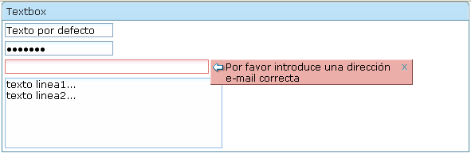
<textbox value="Texto por defecto" />
<textbox value="secreto" type="password" />
<textbox cols="40"
constraint="/.+@.+\.[a-z]+/:
Por favor introduce una dirección e-mail correcta" />
<textbox rows="5" cols="40">
<attribute name="value">
texto linea1...
texto linea2...</attribute>
</textbox>
Los componentes intbox, decimalbox, doublebox y datebox permiten pedir al usuario valores enteros (int), reales (double) y fechas. Son similares y adaptan las restricciones al tipo de valor. También permiten definir el formato de presentación:
<decimalbox format="#,##0.##"/>
<intbox constraint="no negative,no zero"/>
<datebox constraint="no empty, no future: now or never"/>
<datebox constraint="between 20071225 and 20071203"/>
<datebox constraint="after 20071225"/>
Es posible modificar el estilo utilizando propiedades CSS:
<style>
.blue {
color: blue;
font-style: oblique;
}
</style>
<textbox sclass="blue" />
<textbox style="color: red; font-style: oblique;"/>
Ejercicio
Escribir un formulario (registro.zul) que pida los siguientes datos:
- Nombre (Texto): Sólo se permiten letras y espacios
- Contraseña (Texto)
- Re-escribir contraseña (Texto)
- Edad (Entero)
- Fecha de nacimiento (Fecha)
- Email (Texto): Sólo se permiten direcciones de correo que terminen en .es
Utilizar como contenedor un grid con dos columnas: Dato y Contenido:
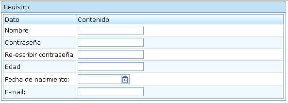
<grid fixedLayout="true">
<columns>
<column label="Dato" width="150px" />
<column label="Contenido" />
</columns>
<rows>
<row>
Nombre
<textbox />
</row>
...
</rows>
</grid>
Rangos
Es posible pedir rangos utilizando el spinner y slider.
Algunos atributos de spinner
- value: valor entero introducido
- step: incremento de cada click
Algunos atributos de slider:
- curpos: valor seleccionado (entero de 0 a maxpos)
- maxpos: máximo valor (100 por defecto)
- orient: orientación (horizontal o vertical)
Ejemplo:
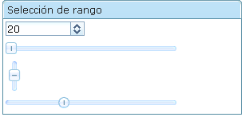
<vbox> <spinner value="20" step="5"/> <slider /> <slider curpos="1" maxpos="20" orient="vertical" height="30px"/> <slider mold="sphere"/> </vbox>
Ejercicio
Añadir un slider al ejemplo de la imagen generada dinámicamente, para que podamos controlar el tamaño del círculo.
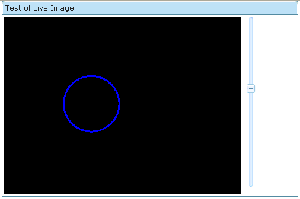
Selección
Para realizar una selección entre múltiples opciones podemos utilizar los componentes checkbox, radio, combobox o bandbox.
Los componentes radio se agrupan en un radiogroup. Sólo un componente puede estar seleccionado. Los atributos más importantes de radio son:
- label: etiqueta de la opción
- image: imagen de la opción
Un ejemplo:
<groupbox>
<caption label="Elige una fruta" />
<radiogroup orient="vertical"
onCheck="alert(self.selectedItem.label)">
<radio label="Manzana" />
<radio label="Naranja" />
<radio label="Pera" />
</radiogroup>
</groupbox>
Los componentes checkbox definen ticks que puede chequear el usuario. Sus atributos principales son:
- label: etiqueta de la opción
- image: imagen de la opción
<groupbox>
<zscript><![CDATA[
void doChecked() {
seleccion.value = (f1.isChecked() ? f1.label + ' ' : "")
+ (f2.isChecked() ? f2.label + ' ' : "")
+ (f3.isChecked() ? f3.label + ' ' : "");
}
]]>
</zscript>
<caption label="Elige varias frutas" />
<vbox>
<checkbox id="f1" label="Manzana" onCheck="doChecked()" />
<checkbox id="f2" label="Naranja" onCheck="doChecked()" />
<checkbox id="f3" label="Pera" onCheck="doChecked()" />
</vbox>
</groupbox>
Has seleccionado:
<label id="seleccion" />
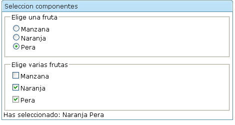
Los otros componentes combobox y bandbox permiten crear cajas de selección más complicadas en las que se utilizan menús desplegables.
El combobox permite definir múltiples elementos comboitem que aparecen cuando el usuario pulsa el desplegable:
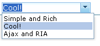
<combobox> <comboitem label="Simple and Rich" /> <comboitem label="Cool!" /> <comboitem label="Ajax and RIA" /> </combobox>
Los comboitem pueden tener los siguientes atributos:
- label: etiqueta del ítem
- image: imagen
- description: descripción
Si añadimos el atributo image al combobox anterior queda así:
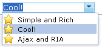
Como el combobox también es un textbox procesa el evento onChanging. Con ese evento es posible implementar un autocompletado y rellenar sus items dinámicamente:
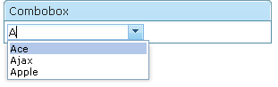
<zscript><![CDATA[
void suggest() {
String[] palabras = { "Ace", "Ajax", "Apple", "Best",
"Blog" };
combo.getItems().clear();
for (String str : palabras)
if (str.startsWith(event.value))
combo.appendItem(str);
}
]]>
</zscript>
<combobox id="combo" autodrop="true" onChanging="suggest()" />